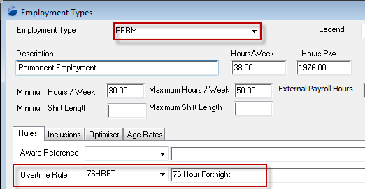

Home
Tutorial
Introduction
In our last helpdesk example we discussed the incorrect payment of staff resulting from not running the cast overtime process. In this document we outline what you must do to reconcile and correct the problem.
|
Getting There:
[ SC ] –> Modules / Module Options
|
Issue
The cast overtime process is a process that you run prior to a payroll (where the award defines as an example 76 hour fortnight) so that the system correctly calculates overtime and loadings over the period in question (eg 76 hours). What's happended in our example is that we have paid our staff for the period, only to realise that the cast overtime process was not run, and hence there's a likelihood that the pays are incorrect.
The pays will be incorrect only for those employees whose employment type defines that they have an overtime rule attached, as per the following:

Top of Page
Step 1
To understand whethere there are any differences, we need to:
- note the current pay details,
- cast the overtime,
- rerun the pay,
- compare the results.
Top of Page
Note current pay details
What you need to do here is to print out the current pay's Payroll Summary Report - this will detail the wages and taxes already paid on a per individual basis.
Then using the pre-payroll reports, print out the report for the period of the pay ensuring that you cover all of the employees included in the payrun. The item that you want to note here is the final total line detailing the breakdown of normal, hour 1/2, double, etc totals. We'll use this as a comparison after the payrun has been re-processed.
Top of Page
Cast the overtime - part 1
IMPORTANT NOTE: You would run the following steps on a "COPY" of your production database, not against the live production database as that will invalidate your financial details.
On a copy of your production system:
Uncommit the payrun in error - this will allow you to manipulate the rosters involved in the payrun.
Re-cost the rosters through [ Tools ] –> Recost Time Schedules via:
Ensure that you enter the correct values corresponding to your own circumstances.
This will reset the values on the "costs" tab of each roster to original values as if you had just created the individual roster entries. At this stage you may re-run the pre-payroll report to confirm to yourself that the total values for hours and hour types have changed.
Top of Page
Cast the overtime - part 2
Having reset the rosters to original values, we're now in a position to cast the overtime, so using
[ Nav ] –> Scheduling / Module Options, as per:
Once you have cast overtime, again, using the pre-payroll report compare the grand total line to quickly review that the process is indeed working for you.
Top of Page
Rerun the pay
Satisfied that the cast overtime has worked, you are now ready to re-run your payrun. Using the same batch header from your uncommitted payrun, rerun it using the "wizard" icon (so that your previous paramaters are re-used).
Print out the Payroll Summary Report and compare the new details against the original.
Top of Page
Compare the results
With the differences noted, you need to then create manual adjustments for each employee and run a payrun to pick up the adjustments.
The manual adjustments are entered via the manual pay adjustments screen [ Nav ] –> Payroll / Pre Payrun Manual Adjustments
Top of Page
See Also
 Overtime Not Cast Overtime Not Cast
PowerForce Controls
|